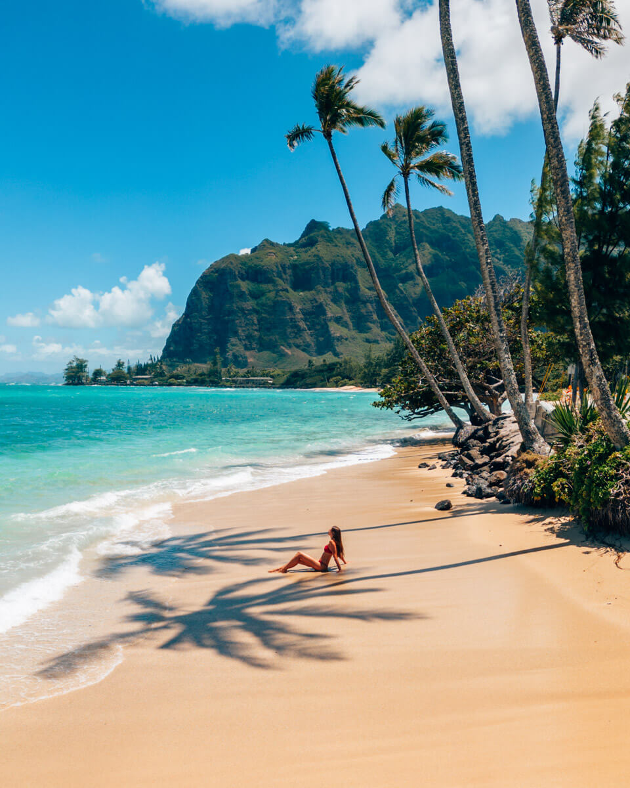

Sometimes called “The Gathering Place,” Oʻahu certainly lives up to its name. The third largest Hawaiian island is home to the majority of Hawaiʻi’s diverse population, a fusion of East and West cultures rooted in the values and traditions of the Native Hawaiian people. It’s this fundamental contrast between the ancient and the modern that makes discovering Oʻahu — from bustling city life to laidback surf towns — so enjoyable. You'll find plenty of different transportation options for exploring Oʻahu's different regions, the island's many activities, its eclectic restaurants and accommodations.
Oʻahu has beaches from world-famous Waikīkī to the North Shore's legendary surf spots and the relaxed atmosphere of Mākaha Beach, there are beaches for every type of traveler on Oʻahu. Oʻahu land activities include hiking and biking to museums and golf, there's lots to do during your visit. Oʻahu water activities legendary surfing, amazing snorkeling, boat trips and more. Some air activities to do are skydiving, parasailing, helicopter tours and more.
Some useful information about Oʻahu:
Oʻahu has beaches from world-famous Waikīkī to the North Shore's legendary surf spots and the relaxed atmosphere of Mākaha Beach, there are beaches for every type of traveler on Oʻahu. Oʻahu land activities include hiking and biking to museums and golf, there's lots to do during your visit. Oʻahu water activities legendary surfing, amazing snorkeling, boat trips and more. Some air activities to do are skydiving, parasailing, helicopter tours and more.
Some useful information about Oʻahu:
- The area code for the state of Hawaiʻi is (808).
- Oʻahu Visitors Bureau: (808) 524-0722
- Marriage License and Civil Unions: (808) 586-4545
- Honolulu International Airport Visitor Information: (808) 836-6413
- Agricultural Inspection: (808) 832-0566
- Camping Permits: (808) 523-4525 (county), (808) 587-0300 (state)
Daniel K. Inouye International Airport (HNL) on O‘ahu is Hawai‘i’s major airport, serving as the entry point for most of Hawai‘i’s visitors. All major domestic carriers and many international carriers serve O‘ahu, making it accessible from just about anywhere.
You can get around by car rental, shuttle, taxi, or O‘ahu’s public transportation system (TheBus). Note: Rental cars are in high demand, so plan to secure a reservation. More information about vehicle rental and ground transportation options can be found here. Many visitors also enjoy taking bus tours to conveniently explore the island. Others rent mopeds and motorcycles. However, to experience all that O‘ahu offers, consider reserving a rental car in advance from Daniel K. Inouye International Airport.
O‘ahu’s city transportation system is aptly named “TheBus.” Fares are reasonable, routes are extensive, and there are special visitor passes for multiple-day use. Note: You will need cash or a Holo card to ride! For more information on fares, bus routes to popular attractions, and other useful information, visit here.
If you are looking for Waikīkī transportation and an effortless way to visit nearby attractions, the trolley is an affordable option. The routes and destinations are not as extensive as TheBus, but the trolley goes to most major visitor attractions and offers tickets for unlimited rides over a certain number of days. For more information visit here or call (808) 593-2822.
Taxis are a great way to travel when in a group, and the cost can be shared. You can find taxi stands at most major shopping centers, in the business district, and at the airport. Note that, rather than hailing a cab, finding taxi stands at major shopping centers and businesses, as well as calling for pickups via hotel concierge or phone, is the norm in Hawai‘i.
You can get around by car rental, shuttle, taxi, or O‘ahu’s public transportation system (TheBus). Note: Rental cars are in high demand, so plan to secure a reservation. More information about vehicle rental and ground transportation options can be found here. Many visitors also enjoy taking bus tours to conveniently explore the island. Others rent mopeds and motorcycles. However, to experience all that O‘ahu offers, consider reserving a rental car in advance from Daniel K. Inouye International Airport.
O‘ahu’s city transportation system is aptly named “TheBus.” Fares are reasonable, routes are extensive, and there are special visitor passes for multiple-day use. Note: You will need cash or a Holo card to ride! For more information on fares, bus routes to popular attractions, and other useful information, visit here.
If you are looking for Waikīkī transportation and an effortless way to visit nearby attractions, the trolley is an affordable option. The routes and destinations are not as extensive as TheBus, but the trolley goes to most major visitor attractions and offers tickets for unlimited rides over a certain number of days. For more information visit here or call (808) 593-2822.
Taxis are a great way to travel when in a group, and the cost can be shared. You can find taxi stands at most major shopping centers, in the business district, and at the airport. Note that, rather than hailing a cab, finding taxi stands at major shopping centers and businesses, as well as calling for pickups via hotel concierge or phone, is the norm in Hawai‘i.

Join our membership program for 3% off all trips! Members also get an extra 1% discount at when they have flown over 50000 miles with us!
Join us at (123)-456-7890